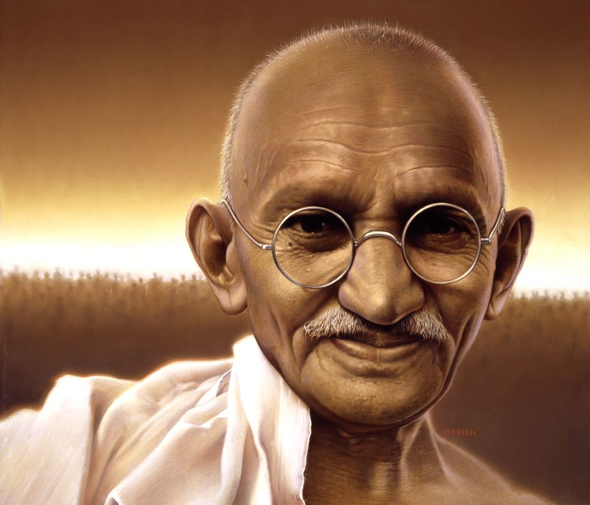

Mahatma Gandhi
The man who disobeyed...

Person of the Century for Time runner-up, Gandhi. By: Tim O'Brien
Here's a timeline of Gandhi's life:
- 1869 Born in Porbandar, Kathiawar Agency, British India.
- 1891 Passed his bar in the U.K. and became a lawyer.
- 1893 He is thrown off of a train after refusing to give up his fairly purchased first class seat.
- 1894 Gandhi establishes the Natal Indian Congress in opposition to a bill denying Indians the ability to vote in South Africa.
- 1908 Gandhi and a large cohort of Indians burn their unjust registration cards as a sign of protest in Johannesburg.
- 1920 He gets people to boycott British products & manufacture their own.
- 1930 The British make it illegal for Indians to make their own salt. Gandhi & his followers travel to Dandi to make their own own. As a result, he is imprisoned.
- 1942 He is imprisoned for launching the "Quit India" campaign declaring India’s self-government from British rule.
- 1943 Gandhi starts a hunger strike which continues for 21 days.
- 1948 January 12 – Asking for payment to be made to Pakistan and conflict to cease, Gandhi starts another fast. 5 days into the fast, India makes payment to Pakistan. In addition Hindu, Muslim & Sikh community leaders agree to peace.
- 1948 January 30 – Gandhi was shot and killed by a member of a Hindu organization enraged by Gandhi’s peacemaking campaigns.
“I believe that Gandhi’s views were the most enlightened of all the political men in our time. We should strive to do things in his spirit: not to use violence in fighting for our cause, but by non-participation in anything you believe is evil.”
If you have some time, you should read more about this incredible human being on his Wikipedia entry.